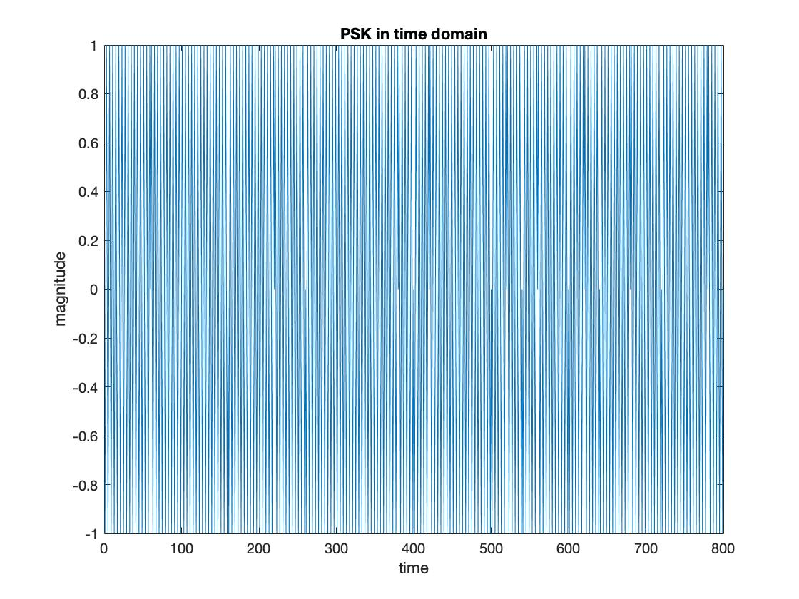
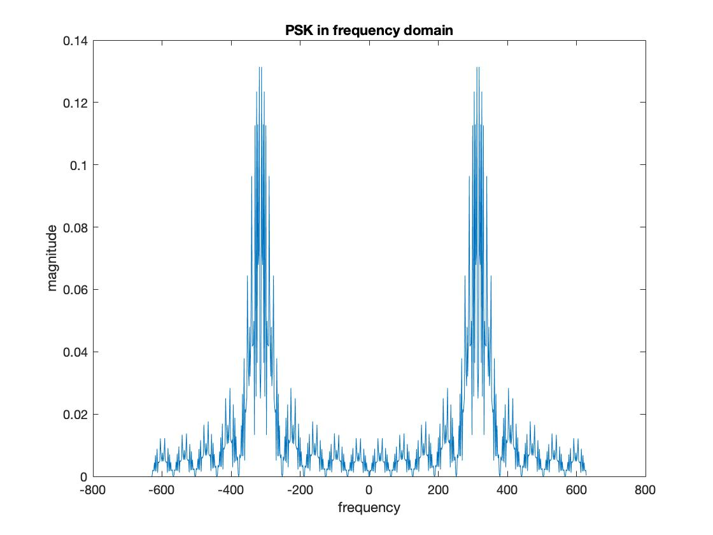
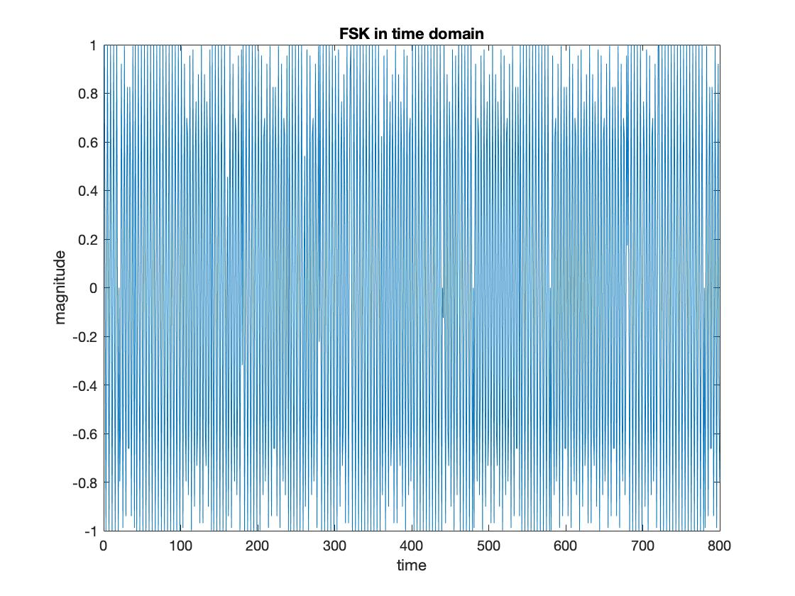
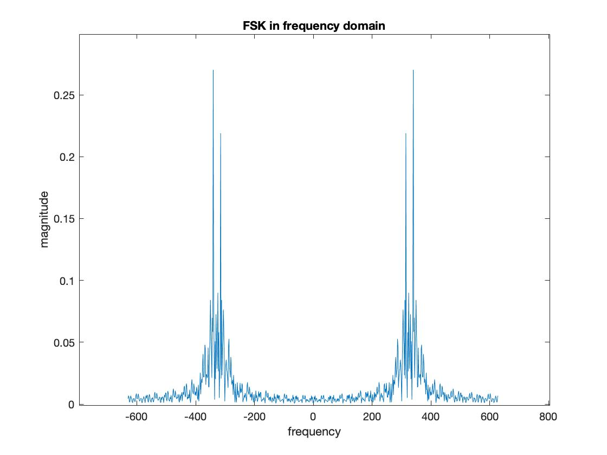

Signal Modulation! ~ Dan Chiarlone ッ
ASK
Matlab Graphs


Matlab Code
close all;
clear;
clc;
% bit sequence
K = 40;
data_rate = 20;
b_k = zeros(1, K*data_rate);
for i = 0:(K-1)
curr = round(rand());
for j = 1:data_rate
b_k(data_rate*i+j) = curr;
end
end
% /bit sequence
% carrier
fc = 315;
N = 800;
OSR = 4;
fs = OSR*fc;
Ts = 1/fs;
n = 0:(N-1);
carrier = cos(2*pi*fc*n*Ts);
% /carrier
% x(t)
% time
x = b_k.*carrier;
figure(1);
plot(x);
title('ASK in time domain');
ylabel('magnitude');
xlabel('time');
% /time
% frequency
k = n; % frequency index;
deltaf = fs/N;
if mod(N,2) == 0
f_shift = (k-(N)/2)*deltaf; % k = N/2
else
f_shift = (k-(N -1)/2)*deltaf; % k = (N-1)/2
end
X = fftshift(fft(x));
figure(2);
plot(f_shift, abs(X)/N);
title('ASK in frequency domain');
ylabel("magnitude");
xlabel("frequency");
% /frequency
% /x(t)
PSK
Matlab Graphs


Matlab Code
% x(t)
% time
x_psk = cos(2*pi*fc*n*Ts + pi.*b_k);
figure(3);
plot(x_psk);
title('PSK in time domain');
ylabel('magnitude');
xlabel('time');
% /time
% frequency
X_PSK = fftshift(fft(x_psk));
figure(4);
plot(f_shift, abs(X_PSK)/N);
title('PSK in frequency domain');
ylabel("magnitude");
xlabel("frequency");
% /frequency
% /x(t)
FSK
Matlab Graphs


Matlab Code
% x(t)
% time
Deltaf = 25;
x_fsk = cos(2*pi*n*Ts.*(fc+Deltaf*b_k));
figure(5);
plot(x_fsk);
title('FSK in time domain');
ylabel('magnitude');
xlabel('time');
% /time
% frequency
X_FSK = fftshift(fft(x_fsk));
figure(6);
plot(f_shift, abs(X_FSK)/N);
title('FSK in frequency domain');
ylabel("magnitude");
xlabel("frequency");
% /frequency
% /x(t)